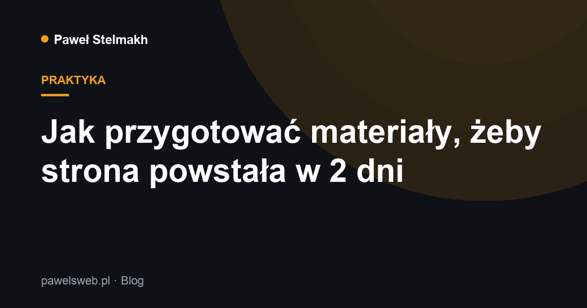

Jak przygotować materiały, żeby strona powstała w 2 dni

Robię stronę wizytówkową w 2 dni robocze — a jeśli nie zdążę, dostajesz ją gratis. Ale zegar rusza dopiero, gdy mam komplet materiałów. Oto krótka lista, jak je przygotować.
Co przygotować
- Teksty — kim jesteś, co oferujesz, dlaczego warto wybrać właśnie Ciebie. Nie muszą być idealne — dopracuję je razem z Tobą.
- Zdjęcia — logo, zdjęcia Twoich realizacji, produktów lub miejsca pracy. Najlepiej dobrej jakości, poziome.
- Logo — jeśli masz. Jeśli nie — mogę je zaprojektować.
- Dane kontaktowe — telefon, e-mail, adres (jeśli dotyczy), linki do social mediów.
Nie masz wszystkiego? Bez stresu
Brak tekstów czy logo nie blokuje projektu — pomagam je przygotować. Wtedy po prostu ustalamy to na początku, a czas realizacji liczymy od momentu, gdy komplet jest gotowy.
Wskazówka: zbierz wszystko w jednym folderze i wyślij naraz. Im szybciej mam komplet, tym szybciej strona jest online.
Jak wygląda proces
- Przesyłasz materiały i krótko opisujesz, czego potrzebujesz.
- Przygotowuję projekt strony dopasowany do Twojej branży.
- Wprowadzamy ewentualne poprawki.
- Publikuję stronę i pomagam z domeną oraz uruchomieniem.
Gotowy do startu? Wypełnij krótki formularz, a odezwę się i ustalimy szczegóły.
Potrzebujesz strony lub SEO?
Napisz — odezwę się, doradzę najlepsze rozwiązanie i przygotuję bezpłatną wycenę.
Wypełnij formularz WhatsApp